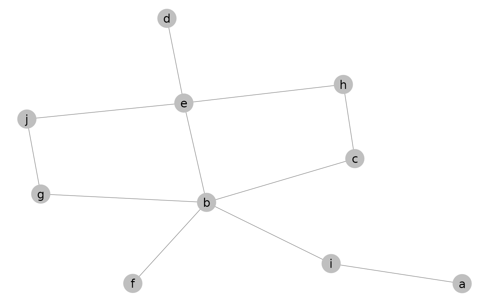
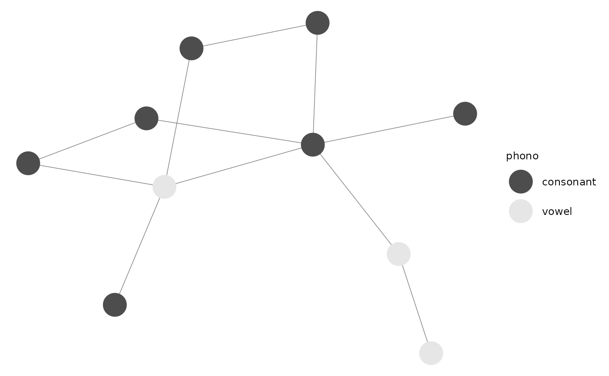
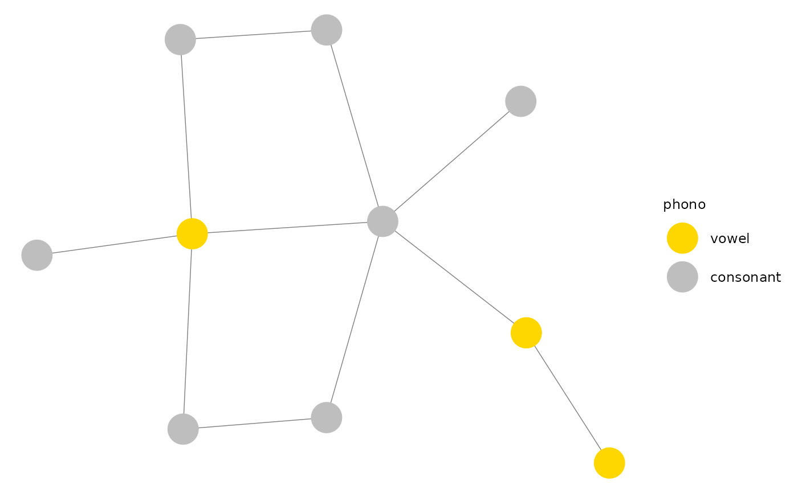
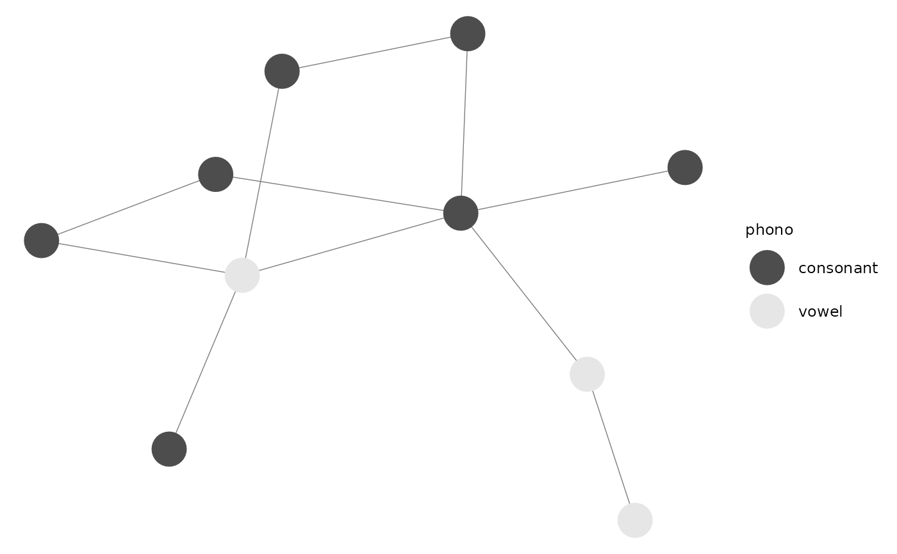
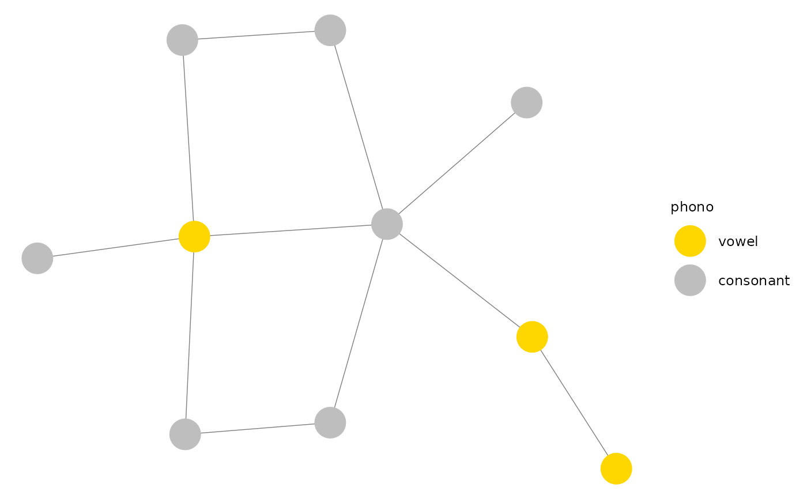
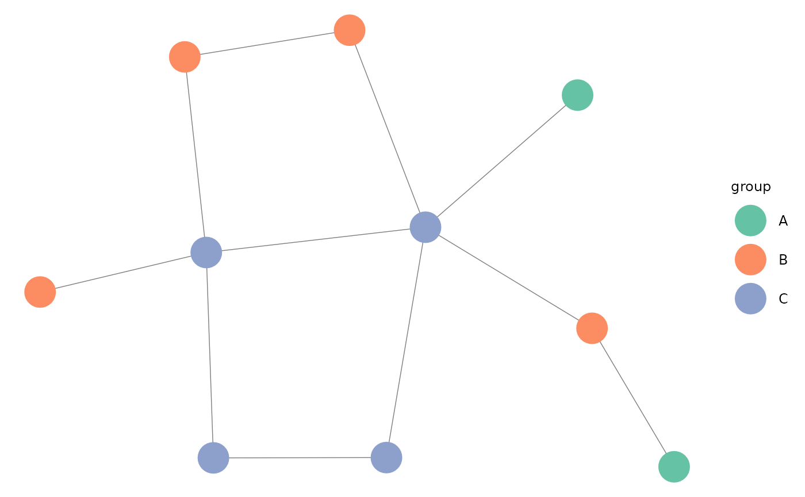
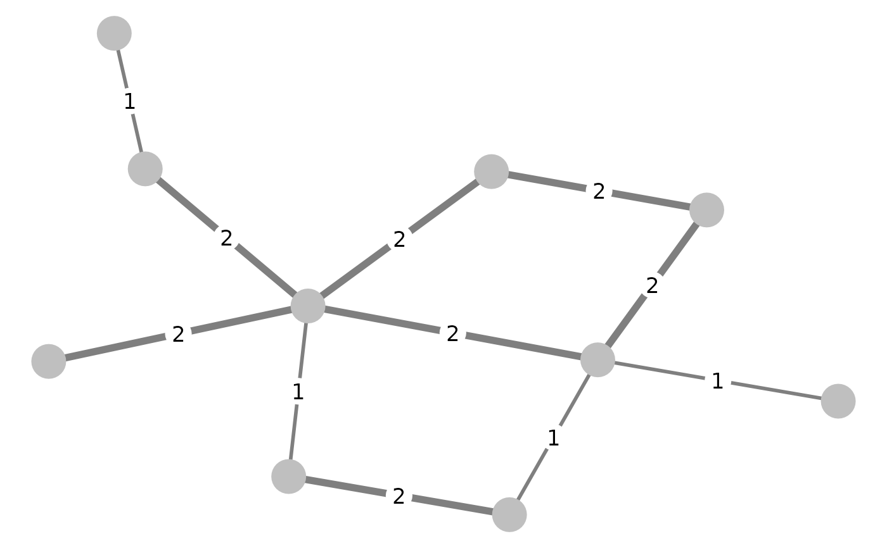
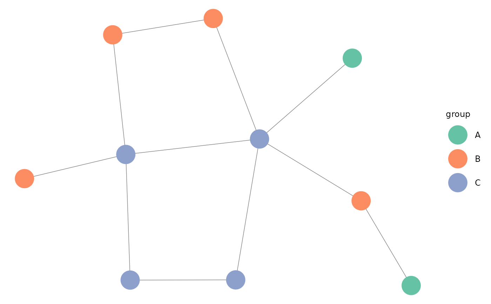
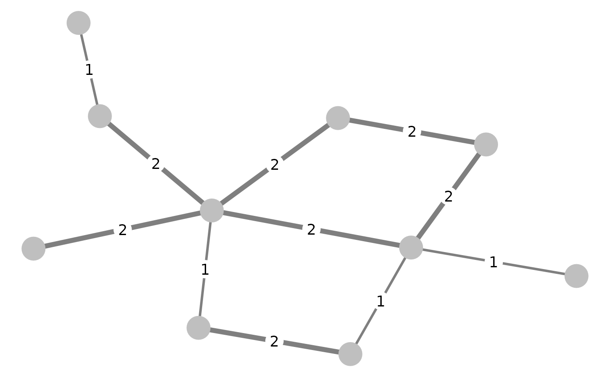

Function for plotting network objects using ggplot2, with additional control
over graphical parameters that are not supported by the ggnet
function. Please visit https://github.com/briatte/ggnet for the latest
version of ggnet2, and https://briatte.github.io/ggnet/ for a vignette
that contains many examples and explanations.
Usage
ggnet2(
net,
mode = "fruchtermanreingold",
layout.par = NULL,
layout.exp = 0,
alpha = 1,
color = "grey75",
shape = 19,
size = 9,
max_size = 9,
na.rm = NA,
palette = NULL,
alpha.palette = NULL,
alpha.legend = NA,
color.palette = palette,
color.legend = NA,
shape.palette = NULL,
shape.legend = NA,
size.palette = NULL,
size.legend = NA,
size.zero = FALSE,
size.cut = FALSE,
size.min = NA,
size.max = NA,
label = FALSE,
label.alpha = 1,
label.color = "black",
label.size = max_size/2,
label.trim = FALSE,
node.alpha = alpha,
node.color = color,
node.label = label,
node.shape = shape,
node.size = size,
edge.alpha = 1,
edge.color = "grey50",
edge.lty = "solid",
edge.size = 0.25,
edge.label = NULL,
edge.label.alpha = 1,
edge.label.color = label.color,
edge.label.fill = "white",
edge.label.size = max_size/2,
arrow.size = 0,
arrow.gap = 0,
arrow.type = "closed",
legend.size = 9,
legend.position = "right",
...
)Arguments
- net
an object of class
network, or any object that can be coerced to this class, such as an adjacency or incidence matrix, or an edge list: see edgeset.constructors and network for details. If the object is of class igraph and the intergraph package is installed, it will be used to convert the object: seeasNetworkfor details.- mode
a placement method from those provided in the
snapackage: see gplot.layout for details. Also accepts the names of two numeric vertex attributes ofnet, or a matrix of numeric coordinates, in which case the first two columns of the matrix are used. Defaults to the Fruchterman-Reingold force-directed algorithm.- layout.par
options to be passed to the placement method, as listed in gplot.layout. Defaults to
NULL.- layout.exp
a multiplier to expand the horizontal axis if node labels get clipped: see expand_range for details. Defaults to
0(no expansion).- alpha
the level of transparency of the edges and nodes, which might be a single value, a vertex attribute, or a vector of values. Also accepts
"mode"on bipartite networks (see 'Details'). Defaults to1(no transparency).- color
the color of the nodes, which might be a single value, a vertex attribute, or a vector of values. Also accepts
"mode"on bipartite networks (see 'Details'). Defaults togrey75.- shape
the shape of the nodes, which might be a single value, a vertex attribute, or a vector of values. Also accepts
"mode"on bipartite networks (see 'Details'). Defaults to19(solid circle).- size
the size of the nodes, in points, which might be a single value, a vertex attribute, or a vector of values. Also accepts
"indegree","outdegree","degree"or"freeman"to size the nodes by their unweighted degree centrality ("degree"and"freeman"are equivalent): seedegreefor details. All node sizes must be strictly positive. Also accepts"mode"on bipartite networks (see 'Details'). Defaults to9.- max_size
the maximum size of the node when
sizeproduces nodes of different sizes, in points. Defaults to9.- na.rm
whether to subset the network to nodes that are not missing a given vertex attribute. If set to any vertex attribute of
net, the nodes for which this attribute isNAwill be removed. Defaults toNA(does nothing).- palette
the palette to color the nodes, when
coloris not a color value or a vector of color values. Accepts named vectors of color values, or if RColorBrewer is installed, any ColorBrewer palette name: seeRColorBrewer::brewer.pal()and https://colorbrewer2.org/ for details. Defaults toNULL, which will create an array of grayscale color values ifcoloris not a color value or a vector of color values.- alpha.palette
the palette to control the transparency levels of the nodes set by
alphawhen the levels are not numeric values. Defaults toNULL, which will create an array of alpha transparency values ifalphais not a numeric value or a vector of numeric values.- alpha.legend
the name to assign to the legend created by
alphawhen its levels are not numeric values. Defaults toNA(no name).- color.palette
see
palette- color.legend
the name to assign to the legend created by
palette. Defaults toNA(no name).- shape.palette
the palette to control the shapes of the nodes set by
shapewhen the shapes are not numeric values. Defaults toNULL, which will create an array of shape values ifshapeis not a numeric value or a vector of numeric values.- shape.legend
the name to assign to the legend created by
shapewhen its levels are not numeric values. Defaults toNA(no name).- size.palette
the palette to control the sizes of the nodes set by
sizewhen the sizes are not numeric values.- size.legend
the name to assign to the legend created by
size. Defaults toNA(no name).- size.zero
whether to accept zero-sized nodes based on the value(s) of
size. Defaults toFALSE, which ensures that zero-sized nodes are still shown in the plot and its size legend.- size.cut
whether to cut the size of the nodes into a certain number of quantiles. Accepts
TRUE, which tries to cut the sizes into quartiles, or any positive numeric value, which tries to cut the sizes into that many quantiles. If the size of the nodes do not contain the specified number of distinct quantiles, the largest possible number is used. Seequantileandcutfor details. Defaults toFALSE(does nothing).- size.min
whether to subset the network to nodes with a minimum size, based on the values of
size. Defaults toNA(preserves all nodes).- size.max
whether to subset the network to nodes with a maximum size, based on the values of
size. Defaults toNA(preserves all nodes).- label
whether to label the nodes. If set to
TRUE, nodes are labeled with their vertex names. If set to a vector that contains as many elements as there are nodes innet, nodes are labeled with these. If set to any other vector of values, the nodes are labeled only when their vertex name matches one of these values. Defaults toFALSE(no labels).- label.alpha
the level of transparency of the node labels, as a numeric value, a vector of numeric values, or as a vertex attribute containing numeric values. Defaults to
1(no transparency).- label.color
the color of the node labels, as a color value, a vector of color values, or as a vertex attribute containing color values. Defaults to
"black".- label.size
the size of the node labels, in points, as a numeric value, a vector of numeric values, or as a vertex attribute containing numeric values. Defaults to
max_size / 2(half the maximum node size), which defaults to4.5.- label.trim
whether to apply some trimming to the node labels. Accepts any function that can process a character vector, or a strictly positive numeric value, in which case the labels are trimmed to a fixed-length substring of that length: see
substrfor details. Defaults toFALSE(does nothing).- node.alpha
see
alpha- node.color
see
color- node.label
see
label- node.shape
see
shape- node.size
see
size- edge.alpha
the level of transparency of the edges. Defaults to the value of
alpha, which defaults to1.- edge.color
the color of the edges, as a color value, a vector of color values, or as an edge attribute containing color values. Defaults to
"grey50".- edge.lty
the linetype of the edges, as a linetype value, a vector of linetype values, or as an edge attribute containing linetype values. Defaults to
"solid".- edge.size
the size of the edges, in points, as a numeric value, a vector of numeric values, or as an edge attribute containing numeric values. All edge sizes must be strictly positive. Defaults to
0.25.- edge.label
the labels to plot at the middle of the edges, as a single value, a vector of values, or as an edge attribute. Defaults to
NULL(no edge labels).- edge.label.alpha
the level of transparency of the edge labels, as a numeric value, a vector of numeric values, or as an edge attribute containing numeric values. Defaults to
1(no transparency).- edge.label.color
the color of the edge labels, as a color value, a vector of color values, or as an edge attribute containing color values. Defaults to
label.color, which defaults to"black".- edge.label.fill
the background color of the edge labels. Defaults to
"white".- edge.label.size
the size of the edge labels, in points, as a numeric value, a vector of numeric values, or as an edge attribute containing numeric values. All edge label sizes must be strictly positive. Defaults to
max_size / 2(half the maximum node size), which defaults to4.5.- arrow.size
the size of the arrows for directed network edges, in points. See
arrowfor details. Defaults to0(no arrows).- arrow.gap
a setting aimed at improving the display of edge arrows by plotting slightly shorter edges. Accepts any value between
0and1, where a value of0.05will generally achieve good results when the size of the nodes is reasonably small. Defaults to0(no shortening).- arrow.type
the type of the arrows for directed network edges. See
arrowfor details. Defaults to"closed".- legend.size
the size of the legend symbols and text, in points. Defaults to
9.- legend.position
the location of the plot legend(s). Accepts all
legend.positionvalues supported bytheme. Defaults to"right".- ...
other arguments passed to the
geom_textobject that sets the node labels: seegeom_textfor details.
Details
The degree centrality measures that can be produced through the
size argument will take the directedness of the network into account,
but will be unweighted. To compute weighted network measures, see the
tnet package by Tore Opsahl (help("tnet", package = "tnet")).
The nodes of bipartite networks can be mapped to their mode by passing the
"mode" argument to any of alpha, color, shape and
size, in which case the nodes of the primary mode will be mapped as
"actor", and the nodes of the secondary mode will be mapped as
"event".
See also
ggnet in this package,
gplot in the sna package, and
plot.network in the network
package
Author
Moritz Marbach and Francois Briatte, with help from Heike Hofmann, Pedro Jordano and Ming-Yu Liu
Examples
# Small function to display plots only if it's interactive
p_ <- GGally::print_if_interactive
library(network)
# random adjacency matrix
x <- 10
ndyads <- x * (x - 1)
density <- x / ndyads
m <- matrix(0, nrow = x, ncol = x)
dimnames(m) <- list(letters[1:x], letters[1:x])
m[row(m) != col(m)] <- runif(ndyads) < density
m
#> a b c d e f g h i j
#> a 0 0 0 0 0 0 0 0 1 0
#> b 0 0 1 0 0 0 1 0 1 0
#> c 0 0 0 0 0 0 0 0 0 0
#> d 0 0 0 0 0 0 0 0 0 0
#> e 0 1 0 1 0 0 0 0 0 1
#> f 0 1 0 0 0 0 0 0 0 0
#> g 0 1 0 0 0 0 0 0 0 0
#> h 0 0 1 0 1 0 0 0 0 0
#> i 0 0 0 0 0 0 0 0 0 0
#> j 0 0 0 0 0 0 1 0 0 0
# random undirected network
n <- network::network(m, directed = FALSE)
n
#> Network attributes:
#> vertices = 10
#> directed = FALSE
#> hyper = FALSE
#> loops = FALSE
#> multiple = FALSE
#> bipartite = FALSE
#> total edges= 11
#> missing edges= 0
#> non-missing edges= 11
#>
#> Vertex attribute names:
#> vertex.names
#>
#> No edge attributes
p_(ggnet2(n, label = TRUE))

p_(ggnet2(n, label = TRUE, shape = 15))
 p_(ggnet2(n, label = TRUE, shape = 15, color = "black", label.color = "white"))
# add vertex attribute
x = network.vertex.names(n)
x = ifelse(x %in% c("a", "e", "i"), "vowel", "consonant")
n %v% "phono" = x
p_(ggnet2(n, color = "phono"))

p_(ggnet2(n, color = "phono", palette = c("vowel" = "gold", "consonant" = "grey")))

p_(ggnet2(n, shape = "phono", color = "phono"))
#> Warning: Duplicated `override.aes` is ignored.
p_(ggnet2(n, label = TRUE, shape = 15, color = "black", label.color = "white"))
# add vertex attribute
x = network.vertex.names(n)
x = ifelse(x %in% c("a", "e", "i"), "vowel", "consonant")
n %v% "phono" = x
p_(ggnet2(n, color = "phono"))

p_(ggnet2(n, color = "phono", palette = c("vowel" = "gold", "consonant" = "grey")))

p_(ggnet2(n, shape = "phono", color = "phono"))
#> Warning: Duplicated `override.aes` is ignored.
 if (require(RColorBrewer)) {
# random groups
n %v% "group" <- sample(LETTERS[1:3], 10, replace = TRUE)
p_(ggnet2(n, color = "group", palette = "Set2"))
}
#> Loading required package: RColorBrewer

# random weights
n %e% "weight" <- sample(1:3, network.edgecount(n), replace = TRUE)
p_(ggnet2(n, edge.size = "weight", edge.label = "weight"))

# edge arrows on a directed network
p_(ggnet2(network(m, directed = TRUE), arrow.gap = 0.05, arrow.size = 10))
# Padgett's Florentine wedding data
data(flo, package = "network")
flo
#> Acciaiuoli Albizzi Barbadori Bischeri Castellani Ginori
#> Acciaiuoli 0 0 0 0 0 0
#> Albizzi 0 0 0 0 0 1
#> Barbadori 0 0 0 0 1 0
#> Bischeri 0 0 0 0 0 0
#> Castellani 0 0 1 0 0 0
#> Ginori 0 1 0 0 0 0
#> Guadagni 0 1 0 1 0 0
#> Lamberteschi 0 0 0 0 0 0
#> Medici 1 1 1 0 0 0
#> Pazzi 0 0 0 0 0 0
#> Peruzzi 0 0 0 1 1 0
#> Pucci 0 0 0 0 0 0
#> Ridolfi 0 0 0 0 0 0
#> Salviati 0 0 0 0 0 0
#> Strozzi 0 0 0 1 1 0
#> Tornabuoni 0 0 0 0 0 0
#> Guadagni Lamberteschi Medici Pazzi Peruzzi Pucci Ridolfi
#> Acciaiuoli 0 0 1 0 0 0 0
#> Albizzi 1 0 1 0 0 0 0
#> Barbadori 0 0 1 0 0 0 0
#> Bischeri 1 0 0 0 1 0 0
#> Castellani 0 0 0 0 1 0 0
#> Ginori 0 0 0 0 0 0 0
#> Guadagni 0 1 0 0 0 0 0
#> Lamberteschi 1 0 0 0 0 0 0
#> Medici 0 0 0 0 0 0 1
#> Pazzi 0 0 0 0 0 0 0
#> Peruzzi 0 0 0 0 0 0 0
#> Pucci 0 0 0 0 0 0 0
#> Ridolfi 0 0 1 0 0 0 0
#> Salviati 0 0 1 1 0 0 0
#> Strozzi 0 0 0 0 1 0 1
#> Tornabuoni 1 0 1 0 0 0 1
#> Salviati Strozzi Tornabuoni
#> Acciaiuoli 0 0 0
#> Albizzi 0 0 0
#> Barbadori 0 0 0
#> Bischeri 0 1 0
#> Castellani 0 1 0
#> Ginori 0 0 0
#> Guadagni 0 0 1
#> Lamberteschi 0 0 0
#> Medici 1 0 1
#> Pazzi 1 0 0
#> Peruzzi 0 1 0
#> Pucci 0 0 0
#> Ridolfi 0 1 1
#> Salviati 0 0 0
#> Strozzi 0 0 0
#> Tornabuoni 0 0 0
p_(ggnet2(flo, label = TRUE))
if (require(RColorBrewer)) {
# random groups
n %v% "group" <- sample(LETTERS[1:3], 10, replace = TRUE)
p_(ggnet2(n, color = "group", palette = "Set2"))
}
#> Loading required package: RColorBrewer

# random weights
n %e% "weight" <- sample(1:3, network.edgecount(n), replace = TRUE)
p_(ggnet2(n, edge.size = "weight", edge.label = "weight"))

# edge arrows on a directed network
p_(ggnet2(network(m, directed = TRUE), arrow.gap = 0.05, arrow.size = 10))
# Padgett's Florentine wedding data
data(flo, package = "network")
flo
#> Acciaiuoli Albizzi Barbadori Bischeri Castellani Ginori
#> Acciaiuoli 0 0 0 0 0 0
#> Albizzi 0 0 0 0 0 1
#> Barbadori 0 0 0 0 1 0
#> Bischeri 0 0 0 0 0 0
#> Castellani 0 0 1 0 0 0
#> Ginori 0 1 0 0 0 0
#> Guadagni 0 1 0 1 0 0
#> Lamberteschi 0 0 0 0 0 0
#> Medici 1 1 1 0 0 0
#> Pazzi 0 0 0 0 0 0
#> Peruzzi 0 0 0 1 1 0
#> Pucci 0 0 0 0 0 0
#> Ridolfi 0 0 0 0 0 0
#> Salviati 0 0 0 0 0 0
#> Strozzi 0 0 0 1 1 0
#> Tornabuoni 0 0 0 0 0 0
#> Guadagni Lamberteschi Medici Pazzi Peruzzi Pucci Ridolfi
#> Acciaiuoli 0 0 1 0 0 0 0
#> Albizzi 1 0 1 0 0 0 0
#> Barbadori 0 0 1 0 0 0 0
#> Bischeri 1 0 0 0 1 0 0
#> Castellani 0 0 0 0 1 0 0
#> Ginori 0 0 0 0 0 0 0
#> Guadagni 0 1 0 0 0 0 0
#> Lamberteschi 1 0 0 0 0 0 0
#> Medici 0 0 0 0 0 0 1
#> Pazzi 0 0 0 0 0 0 0
#> Peruzzi 0 0 0 0 0 0 0
#> Pucci 0 0 0 0 0 0 0
#> Ridolfi 0 0 1 0 0 0 0
#> Salviati 0 0 1 1 0 0 0
#> Strozzi 0 0 0 0 1 0 1
#> Tornabuoni 1 0 1 0 0 0 1
#> Salviati Strozzi Tornabuoni
#> Acciaiuoli 0 0 0
#> Albizzi 0 0 0
#> Barbadori 0 0 0
#> Bischeri 0 1 0
#> Castellani 0 1 0
#> Ginori 0 0 0
#> Guadagni 0 0 1
#> Lamberteschi 0 0 0
#> Medici 1 0 1
#> Pazzi 1 0 0
#> Peruzzi 0 1 0
#> Pucci 0 0 0
#> Ridolfi 0 1 1
#> Salviati 0 0 0
#> Strozzi 0 0 0
#> Tornabuoni 0 0 0
p_(ggnet2(flo, label = TRUE))
 p_(ggnet2(flo, label = TRUE, label.trim = 4, vjust = -1, size = 3, color = 1))
p_(ggnet2(flo, label = TRUE, label.trim = 4, vjust = -1, size = 3, color = 1))
 p_(ggnet2(flo, label = TRUE, size = 12, color = "white"))
p_(ggnet2(flo, label = TRUE, size = 12, color = "white"))